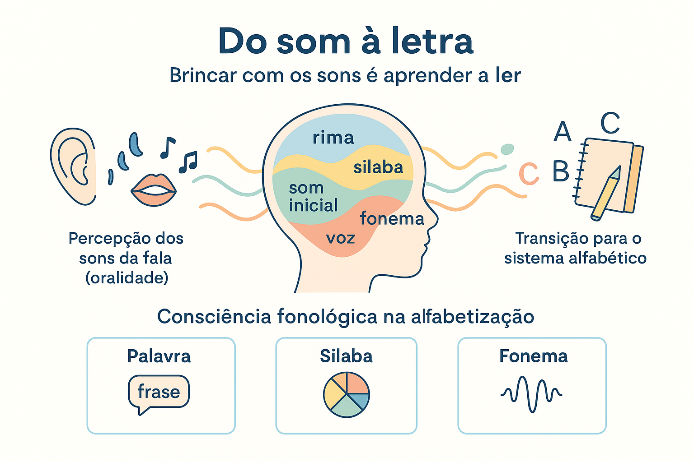

Consciência Fonológica: O Som como Base da Alfabetização
Aprender a ler e a escrever em um sistema alfabético representa uma das maiores revoluções cognitivas vivenciadas pela mente humana na infância. Ao contrário da linguagem oral, que se desenvolve de maneira espontânea por imersão social e dotação biológica da espécie, a escrita é uma invenção cultural recente e sofisticada. Ela não representa diretamente os objetos, as ideias ou a realidade empírica, mas codifica visualmente a própria substância fônica da fala.
Para decifrar esse código, o aprendiz precisa efetuar um complexo deslocamento de atenção: deixar de focar exclusivamente o significado das palavras (o conteúdo da mensagem) para inspecionar conscientemente o seu significante sonoro (a forma fônica das emissões). Essa faculdade de refletir intencionalmente sobre a arquitetura dos sons da língua e manipular deliberadamente suas unidades constitutivas é denominada pela psicologia cognitiva e pela linguística como consciência fonológica.
Pesquisas contemporâneas em neurociência cognitiva, fonoaudiologia e pedagogia (MORAIS, 2019; SOARES, 2016; DEHAENE, 2012) comprovam que a consciência fonológica não é um subproduto tardio da alfabetização, mas o seu verdadeiro motor e alicerce preditivo. Crianças que compreendem previamente que a fala é decomponível em palavras, sílabas, rimas e fonemas assimilam o princípio alfabético com fluidez, desenvolvem autonomia ortográfica e apresentam índices substancialmente menores de dificuldades de leitura.
Neste artigo acadêmico, você explorará o estatuto cognitivo das habilidades metafonológicas, a taxonomia hierárquica dos quatro níveis de consciência sonora (da frase ao fonema), a relação indissociável entre a reflexão fônica e as hipóteses de escrita de Ferreiro e Teberosky, além de roteiros pedagógicos de intervenção, matrizes comparativas, questões resolvidas de concursos educacionais e sínteses conceituais.

O estatuto cognitivo da Consciência Fonológica
A consciência fonológica insere-se no domínio mais amplo das habilidades metalinguísticas — isto é, a capacidade de tomar a própria linguagem como objeto de reflexão, análise e categorização intencional. Ouvir e falar são processos primários automáticos; já analisar a estrutura fonotática de uma emissão requer esforço analítico deliberado.
Na experiência espontânea de uma criança não alfabetizada, a palavra falada é percebida como um bloco compacto indissociável da coisa designada (fenômeno conhecido como realismo nominal). Por exemplo, a criança tende a acreditar que a palavra "trem" deve ser enorme porque o veículo físico é grande, enquanto "formiguinha" deveria ser pequena. Superar o realismo nominal exige compreender que a extensão da palavra gráfica e oral depende unicamente do número de segmentos sonoros que a constituem, e não do tamanho do objeto no mundo material.
A centralidade da reflexão sobre o som
“A consciência fonológica constitui um dos fatores mais importantes para o sucesso no processo de alfabetização, uma vez que permite ao aprendiz perceber, segmentar e manipular conscientemente os sons da língua, descobrindo que as letras não desenham as coisas, mas grafam os sons das palavras” (MORAIS, 2019, p. 37).
A hierarquia do desenvolvimento metafonológico
A percepção da estrutura sonora da língua não se manifesta de forma súbita ou uniforme. Ela organiza-se como um contínuo desenvolvimental cumulativo que avança progressivamente das unidades fonológicas maiores, mais perceptíveis e salientes para os segmentos mais abstratos e microscópicos da cadeia da fala:
Os Quatro Níveis Hierárquicos da Consciência Fonológica
- Consciência de Palavras (Consciência Lexical / Frasal): habilidade de isolar e segmentar as palavras que compõem uma oração, compreendendo que a frase falada não é um contínuo indivisível;
- Consciência Silábica: capacidade de identificar, quantificar, segmentar, aglutinar e inverter as sílabas que formam os vocábulos;
- Consciência Intrassilábica (Rima e Aliteração): percepção das subdivisões internas da sílaba, distinguindo o ataque (consoante inicial) da rima (vogal nuclear mais coda);
- Consciência Fonêmica: o ápice do refinamento metafonológico, consistente em identificar, isolar, fundir, subtrair e transpor os menores sons distintivos da fala — os fonemas.
Consciência Fonológica Ampla (Global)
Engloba a reflexão sobre frases, palavras, sílabas e rimas. Possui alta saliência perceptiva porque as sílabas coincidem com pulsos de energia expiratória facilmente audíveis pelo ouvido humano. Desenvolve-se em larga medida de modo espontâneo por meio da cultura lúdica infantil (jogos de roda, parlendas e cantigas populares).
Foco: Unidades fonéticas suprassegmentais e silábicas globais.
Consciência Fonêmica (Estrita)
Restringe-se à manipulação dos fonemas individuais (/p/, /b/, /t/, /a/). Ao contrário das sílabas, os fonemas não são pronunciados isoladamente na fala real, mas coarticulados em frações de milissegundos. Por essa razão abstrata, a consciência fonêmica não emerge espontaneamente: ela exige instrução pedagógica direta e sistemática associada às letras.
Foco: Segmentos distintivos mínimos do sistema da língua.
Da oralidade à escrita: a apropriação do Sistema Alfabético
A aquisição da leitura e da escrita pela criança é um processo de reconstrução conceitual e não de mera memorização mecânica de formas gráficas. Como demonstraram Emilia Ferreiro e Ana Teberosky (1999) em suas investigações psicogenéticas, a criança percorre sucessivas hipóteses conceituais sobre a escrita, nas quais a consciência fonológica desempenha o papel de catalisador evolutivo:
- Nível Pré-Silábico: a criança ainda não compreendeu que a escrita representa a pauta sonora da fala. Utiliza letras como desenhos figurativos, sem correspondência com os sons emitidos;
- Nível Silábico: salto qualitativo crucial impulsionado pelo despertar da consciência silábica. A criança percebe que a fala é segmentável e postula que a cada emissão silábica oral deve corresponder uma letra no papel (ora sem valor sonoro convencional, ora com valor sonoro estável, como escrever A O para GATO);
- Nível Silábico-Alfabético: período de conflito cognitivo gerado pelo refinamento da consciência intrassilábica e fonêmica. A criança percebe que uma única letra é insuficiente para representar certas sílabas, passando a oscilar na grafia (escreve GTO para GATO);
- Nível Alfabético: consolidação do princípio alfabético decorrente do domínio da consciência fonêmica. A criança compreende categoricamente que cada caractere gráfico corresponde a uma unidade sonora mínima distintiva (o fonema), conquistando a base para a leitura e escrita autônomas.
A reciclagem neuronal da leitura (Stanislas Dehaene)
“Aprender a ler consiste em reconectar dois sistemas cerebrais geneticamente evoluídos e pré-existentes: o sistema da visão de alta resolução e o sistema da linguagem oral. A leitura exige que os neurônios da área visual especializada ('a caixa de letras do cérebro') canalizem seus sinais diretamente para as áreas temporais do processamento fonológico da fala. Sem consciência fonológica prévia, esse circuito cerebral não consegue se formar” (DEHAENE, 2012, p. 28).
Quadro evolutivo das habilidades de Consciência Fonológica
A tabela a seguir sistematiza a progressão pedagógica das habilidades metafonológicas, sua faixa etária típica de maturação e atividades práticas recomendadas:
| Nível Metalinguístico | Operação Cognitiva | Etapa Educacional Típica | Atividade Prática Exemplar |
|---|---|---|---|
| Consciência de Frases / Palavras | Isolar vocábulos e contar termos na sentença falada. | Educação Infantil (3 a 4 anos) | Pular em quadrados desenhados no chão para cada palavra dita na frase: "O - cachorro - correu" (3 saltos). |
| Consciência Silábica | Segmentação, contagem e síntese de blocos silábicos. | Educação Infantil (4 a 5 anos) | Bater palmas rítmicas a cada sílaba de palavras cotidianas: "bo-ne-ca" (3 palmas); aglutinar "sol" (1 palma). |
| Rima (Intrassilábica) | Identificar e produzir sons idênticos no final das palavras. | Educação Infantil (4 a 5 anos) | Brincadeiras de bingo de rimas: associar figuras cujos nomes terminam com o mesmo som (ex.: panela rima com janela). |
| Aliteração (Intrassilábica) | Reconhecer a repetição do mesmo som consonantal no início. | Educação Infantil (5 anos) | Jogo do som intruso: identificar entre pato, pipoca, peixe e sapo qual palavra não inicia com o mesmo padrão sonoro. |
| Consciência Fonêmica: Isolamento | Identificar o fonema inicial ou final de uma palavra. | 1º Ano do Ensino Fundamental (6 anos) | Descobrir com que som inicial começa a palavra uva ([u]) ou sapo ([s]). |
| Consciência Fonêmica: Fusão / Síntese | Reunir fonemas isolados para compor a palavra inteira. | 1º Ano do Ensino Fundamental (6 anos) | O professor emite pausadamente /m/ - /a/ - /r/ e o estudante deve sintetizar oralmente: "mar"! |
| Consciência Fonêmica: Manipulação | Adicionar, subtrair ou trocar fonemas deliberadamente. | 1º ao 2º Ano do Ensino Fundamental (6 a 7 anos) | Desafio do som mágico: "Se retirarmos o som /m/ da palavra 'mola', que nova palavra se forma?" (Resposta: ola). |
A armadilha pedagógica: Foco no Som sem Letramento
Desenvolver a consciência fonológica não significa submeter crianças a exercícios descontextualizados, enfadonhos ou exaustivos de repetição mecânica de fonemas isolados. Como adverte Magda Soares (2016), a consciência fonológica ganha sentido pedagógico pleno quando articulada indissociavelmente às práticas de letramento — leitura compartilhada de literatura infantil rica em ritmo e sonoridade, cantigas, poesias e parlendas significativas, onde a reflexão fônica caminha lado a lado com a exploração das letras e a produção de textos reais.
Roteiro metodológico: como planejar a intervenção fonológica na escola
Para educadores, coordenadores pedagógicos e fonoaudiólogos educacionais, a estimulação da consciência fonológica requer planejamento sistemático e intencional. O roteiro metodológico a seguir sintetiza as etapas operacionais para uma intervenção eficaz:
Etapas do roteiro de mediação metafonológica
- Avaliação diagnóstica das hipóteses de escrita e percepção sonora: sondagem inicial para identificar se o estudante opera no nível silábico, se reconhece rimas ou se já isola fonemas iniciais;
- Imersão lúdica na oralidade poética: exploração intensiva de parlendas, cantigas tradicionais, adivinhas e quadrinhas populares com ênfase na cadência sonora;
- Atividades de manipulação silábica explícita: jogos com fichas móveis, segmentação por palmas e contagem de sílabas canônicas (CV) e não canônicas (CCV, CVC);
- Trabalho sistemático com rimas e aliterações: criação de listas coletivas de palavras que rimam ou que partilham o mesmo ataque consonantal inicial;
- Conexão grafo-fonêmica explícita: articulação imediata do som isolado à sua respectiva representação gráfica no alfabeto (grafema), evitando a fragmentação abstrata;
- Atividades de síntese e segmentação fonêmica orientada: manipulação de letras móveis para montar, desmontar e trocar letras/sons formando novas palavras (ex.: lata → pata → mata);
- Monitoramento contínuo e remediação precoce: acompanhamento das crianças que apresentam lentidão perceptiva para intervir antes que se instalem bloqueios de alfabetização.
Exemplo prático de intervenção: a superação da hipótese silábica
Situação diagnóstica inicial
Lucas, estudante de 6 anos no 1º ano do Ensino Fundamental, encontra-se na hipótese silábica com valor sonoro. Ao ser solicitado a escrever as palavras PIPOCA, CAVALO e SAPATO, ele produz no papel:
Escrita de Lucas:
I O A (para pipoca)
C A O (para cavalo)
S A T (para sapato)
Análise psicogenética e metafonológica
Lucas já possui excelente consciência silábica: ele compreende que cada palavra tem três partes sonoras e associa cada uma dessas partes a uma letra do alfabeto. Todavia, ele ainda não desenvolveu a consciência fonêmica intrassilábica: para ele, a sílaba é uma unidade atômica indivisível. Ele não percebe que dentro da sílaba PI existem dois sons articulados articulatórios em rápida sucessão (/p/ e /i/).
Intervenção pedagógica focada em consciência intrassilábica e fonêmica
O professor planeja uma intervenção reflexiva utilizando letras móveis e desafios de prolongamento e contraste:
1. Prolongamento auditivo: o professor pronuncia a sílaba inicial de pipoca de modo desacelerado [p...i...], perguntando: "Quando falamos 'pi', a boca faz apenas um movimento ou sentimos o estalo dos lábios e depois o sorriso da vogal?";
2. Contraste de aliteração: apresenta fichas de palavras que começam com o mesmo som /p/ (pato, panela, peixe, pipoca), destacando o contato bilabial inicial;
3. Jogo da troca de letras móveis: coloca na mesa a sílaba PO e desafia Lucas: "Se temos 'PO' e trocamos o 'O' pelo 'I', como fica?" Lucas realiza a fusão auditiva e pronuncia: "PI!".
Resultado observado
Após três semanas de mediação reflexiva, Lucas compreende que a sílaba é composta por mais de uma unidade fônica. Sua escrita transita para o nível silábico-alfabético (escreve PIPOKA e SAVALO) e, subsequentemente, atinge a estabilidade da hipótese alfabética plena.
Questões para estudo e reflexão
Questão 1
(Concurso Professor de Educação Básica / Pedagogia) A consciência fonológica é frequentemente definida como uma competência metalinguística. O que significa essa caracterização e por que ela é indispensável para a apropriação da escrita alfabética?
Ver resposta comentada
Resposta comentada: Significa que a consciência fonológica ultrapassa o uso espontâneo e automático da linguagem oral, exigindo que o indivíduo tome a própria forma sonora das palavras como objeto consciente de análise, dissociação e manipulação mental, independentemente de seus significados. Ela é indispensável para a apropriação da escrita porque o sistema alfabético é uma convenção que representa as unidades sonoras abstratas da fala (fonemas); sem capacidade metalinguística para isolar esses sons, o aprendiz é incapaz de compreender a razão de ser das letras e do princípio alfabético.
Questão 2
(ENEM / Linguagens e Códigos) Qual é a diferença fundamental no processamento cognitivo entre a percepção da sílaba e a percepção do fonema por uma criança em fase pré-escolar?
Ver resposta comentada
Resposta comentada: A sílaba possui alta saliência perceptiva e biofísica natural, correspondendo a pulsos de pressão aéreo-expiratória e abertura do trato vocal facilmente identificáveis pelo ouvido e pelo ritmo motor da criança. O fonema, por outro lado, é uma unidade abstrata que não existe isolada na fala real: os fonemas são fundidos em coarticulação mútua durante a elocução. Por essa razão, a consciência silábica emerge de forma muito mais precoce e espontânea, enquanto a consciência fonêmica depende de mediação pedagógica intencional e do contato com o sistema alfabético.
Questão 3
(PAES UEMA / Letras) Em uma avaliação diagnóstica de alfabetização, uma aluna escreve a palavra CAVALO como KVO. Sob a perspectiva psicogenética de Ferreiro e Teberosky, qual é a hipótese de escrita manifestada pela criança e qual relação ela guarda com a consciência fonológica?
Ver resposta comentada
Resposta comentada: A criança manifesta a hipótese silábica com valor sonoro (ou de transição silábica). Ela compreendeu que a palavra CA-VA-LO possui três partes sonoras (sílabas) e alocou exatamente uma letra para representar cada uma dessas sílabas, escolhendo caracteres grafofonemicamente pertinentes (o K para /ka/, o V para /va/ e o O para /lu/). Isso comprova que a aluna possui consciência silábica consolidada, necessitando agora de intervenções que a levem a perceber as unidades fonêmicas internas que compõem cada sílaba.
Questão 4
(Concurso Público / Fonoaudiologia Educacional) Por que o trabalho intensivo com rimas e aliterações na Educação Infantil é considerado um preditor altamente eficaz do sucesso futuro na aprendizagem da leitura?
Ver resposta comentada
Resposta comentada: Porque rimas e aliterações trabalham a consciência intrassilábica, que atua como uma ponte cognitiva fundamental entre a consciência silábica global e a consciência fonêmica estrita. Ao perceber que palavras diferentes compartilham o mesmo final (rima: gato / pato) ou o mesmo começo (aliteração: bala / boca), a criança treina a capacidade de segmentar a sílaba em ataque consonantal e rima vocálica, preparando o cérebro para isolar os fonemas individuais na alfabetização formal.
Questão 5
(Mestre Kira / Formação Docente) Como o conceito de letramento, preconizado por Magda Soares, deve se articular com o desenvolvimento da consciência fonológica em sala de aula para evitar o mecanicismo pedagógico?
Ver resposta comentada
Resposta comentada: A consciência fonológica deve ser desenvolvida de forma integrada e contextualizada às práticas sociais de leitura e escrita (letramento). Em vez de exercícios repetitivos e enfadonhos de emissão mecânica de sons isolados, o professor utiliza textos reais da cultura infantil (cantigas, poesias, trava-línguas e parlendas) como ponto de partida para refletir sobre os sons. Dessa forma, a aprendizagem das relações grafofonêmicas ocorre a serviço da produção de sentido, da compreensão textual e do prazer da leitura, articulando o método analítico da escrita à função social da linguagem.
Resumo sobre Consciência Fonológica
- A consciência fonológica é a competência metalinguística de refletir sobre a substância sonora da fala e manipular deliberadamente suas partes;
- Supera o "realismo nominal", permitindo que a criança desvincule o tamanho físico do objeto da extensão da palavra que o nomeia;
- Desenvolve-se em contínuo hierárquico: consciência de palavras/frases, consciência silábica, consciência intrassilábica (rimas e aliterações) e consciência fonêmica;
- A consciência silábica possui alta saliência auditiva natural, enquanto a consciência fonêmica é altamente abstrata e requer instrução explícita;
- Atua como catalisador decisivo na evolução das hipóteses de escrita (da pré-silábica à alfabética) documentadas por Emilia Ferreiro;
- A neurociência comprova que a leitura exige a reciclagem neuronal de áreas visuais conectadas às regiões do processamento fonológico cerebral;
- As melhores intervenções na infância articulam brincadeiras, parlendas, rimas e jogos com letras móveis em ambientes letrados de significado real;
- Dificuldades persistentes e resistentes de processamento fonológico constituem o principal sinal neurobiológico da dislexia do desenvolvimento.
Perguntas frequentes sobre Consciência Fonológica
O que é consciência fonológica e qual a sua função na alfabetização?
A consciência fonológica é a competência metalinguística que permite à pessoa refletir conscientemente sobre a estrutura sonora da fala e manipular intencionalmente suas partes (palavras, sílabas, rimas e fonemas), independentemente do significado. Ela é o alicerce da alfabetização porque permite à criança compreender que as letras representam sons da fala (o princípio alfabético).
Qual é a diferença entre consciência fonológica e consciência fonêmica?
A consciência fonológica é um conceito amplo que engloba todas as reflexões sobre os sons da língua (incluindo rimas, aliterações, sílabas e frases). A consciência fonêmica é o estágio final, mais refinado e complexo desse contínuo, referindo-se especificamente à capacidade de isolar, sintetizar, segmentar e permutar os menores segmentos sonoros abstratos da língua: os fonemas individuais.
A consciência fonológica desenvolve-se de maneira espontânea ou precisa de instrução explícita?
Níveis mais globais, como a consciência de rimas e sílabas, desenvolvem-se em parte espontaneamente por meio de cantigas e jogos orais. No entanto, a consciência fonêmica (percepção de fonemas individuais) não é um processo biológico natural: como os fonemas são coarticulados em blocos contínuos na fala, a percepção fonêmica requer mediação pedagógica explícita e sistemática integrada ao aprendizado das letras.
Como a consciência fonológica ajuda a superar a escrita silábica?
Na hipótese silábica descrita por Emilia Ferreiro, a criança pensa que cada letra escrita representa uma sílaba oral inteira. O avanço da consciência fonológica (especialmente intrassilábica e fonêmica) faz a criança perceber que a sílaba é composta por mais de um som articulado, levando-a à hipótese silábico-alfabética e, finalmente, à alfabética plena.
Desenvolver a consciência fonológica significa adotar o método fônico tradicional?
Não necessariamente. Embora o método fônico enfatize as correspondências grafofonêmicas, a consciência fonológica moderna (defendida por autores como Artur Gomes de Morais e Magda Soares) é uma habilidade cognitiva que deve ser desenvolvida de forma dinâmica, reflexiva, lúdica e contextualizada em práticas reais de letramento, sem recorrer ao treino mecânico exaustivo de fonemas descontextualizados.
Quais são as melhores atividades para trabalhar a consciência fonológica na Educação Infantil?
As melhores estratégias são orais e lúdicas: cantigas de roda, parlendas e trava-línguas com rimas e aliterações; brincadeiras de palmas ou contagem de passos para segmentar sílabas; jogos de identificação de sons iniciais de palavras ("jogo do intruso"); e desafios de trocar ou retirar sons de palavras para criar novos termos (ex.: "se tirar o som inicial de rato, sobra ato").
Como o cérebro processa a leitura à luz da neurociência cognitiva?
Segundo a neurociência (Stanislas Dehaene), o cérebro humano recicla neurônios da área visual no hemisfério esquerdo ("caixa de letras do cérebro") para conectar os símbolos visuais da escrita às áreas de processamento fonológico da fala oral. Sem a decodificação da estrutura sonora (consciência fonológica), o cérebro é incapaz de consolidar a via de conversão grafema-fonema necessária para a leitura fluente.
Dificuldades persistentes de consciência fonológica podem indicar dislexia?
Sim. O déficit de processamento fonológico é considerado pela psicologia cognitiva e fonoaudiologia como a principal causa neurobiológica da dislexia do desenvolvimento. Crianças com dificuldade persistente em rimar, segmentar sílabas ou isolar sons iniciais, mesmo após intervenção pedagógica qualificada, devem ser avaliadas por equipe multidisciplinar.
Considerações finais
A consciência fonológica consolida-se como a chave mestra que abre as portas do sistema alfabético de escrita para a criança. Ao converter a atenção ingênua voltada aos significados em reflexão crítica sobre a materialidade dos sons da fala, a habilidade metafonológica desmistifica a lógica interna das letras e transforma a alfabetização em uma conquista intelectual ativa e duradoura.
Compreender a natureza gradativa desse processo — das rimas e sílabas aos fonemas individuais — capacita educadores, fonoaudiólogos e gestores escolares a formularem propostas pedagógicas de alta eficiência, assegurando que o aprendizado do código escrito se desenvolva com solidez científica, prazer estético e pleno compromisso com o letramento cidadão.
Conteúdos relacionados
- Introdução à Fonética: o que é, para que serve e como se relaciona com a fonologia
- Relação entre Fonema e Grafema na Língua Portuguesa
- Classificação dos Sons da Fala: consoantes e vogais na Fonética e na Fonologia
- Os órgãos da fala e a produção dos sons da linguagem humana
- Fenômenos Fonéticos do Português Brasileiro: Processos e Variações
- Fonética e Estudo dos Sons da Fala — Índice de Conteúdos
Referências
- ADAMS, Marilyn Jager et al. Consciência fonológica em crianças pequenas. Tradução de Marianne Rossi Stumpf. Porto Alegre: Artmed, 2006.
- CAGLIARI, Luiz Carlos. Alfabetização e Linguística. 10. ed. São Paulo: Scipione, 2002.
- CRISTÓFARO-SILVA, Thaïs. Fonética e Fonologia do Português: roteiro de estudos e guia de exercícios. 11. ed. São Paulo: Contexto, 2012.
- DEHAENE, Stanislas. Os neurônios da leitura: como a ciência explica a nossa capacidade de ler. Tradução de Leonor Scliar-Cabral. Porto Alegre: Penso, 2012.
- FERREIRO, Emilia; TEBEROSKY, Ana. Psicogênese da língua escrita. Porto Alegre: Artmed, 1999.
- MORAIS, Artur Gomes de. Consciência Fonológica na Educação Infantil e no Ciclo de Alfabetização. 1. ed. Belo Horizonte: Autêntica, 2019.
- MORAIS, Artur Gomes de. Sistema de Escrita Alfabética. São Paulo: Melhoramentos, 2012.
- SOARES, Magda. Alfabetização: a questão dos métodos. São Paulo: Contexto, 2016.
- SOARES, Magda. Alfaletrar: toda criança pode aprender a ler e a escrever. São Paulo: Contexto, 2020.
Explore Outros Conteúdos
Continue seus estudos acessando outras seções do site Mestre Kira: